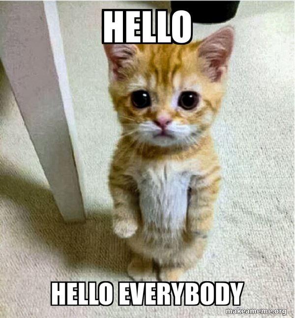
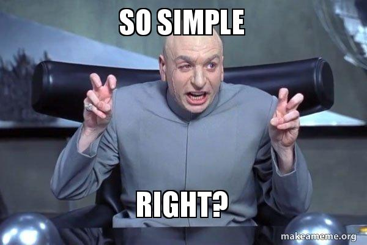
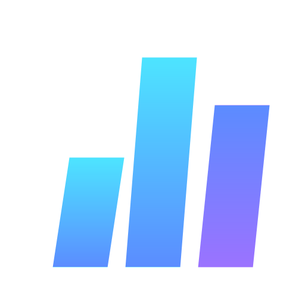

Cara hemat token di AI-native apps dan agentic coding workflow
Orvix.id × Road to DevFest Jakarta 2026

x.com/algonacci
github.com/algonacci
linkedin.com/eric-julianto
instagram.com/eric.juliantooo
Work Experience
Founder at Orvix.id (Now)
Research Analyst at Braincore (Dec 21 - Now)
Machine Learning Mentor at Bangkit Academy (Feb 23 - Jan 24)
SEO Intern at Dibilabs by Dibimbing.id (Mar 23 - Jun 23)
AI Developer Intern at ZettaByte (May 22 - Aug 22)
Education
Token Cloud Credits dari Orvix
| Kuota | 100 juta token per orang |
| Batas harian | 30 juta token per hari |
| Berlaku | sampai 1 November 2026, 23:59 WIB |
| Kecepatan | 20 request/menit, 3 request bersamaan |
| Endpoint | /v1 untuk aplikasi, /coding/v1 untuk coding agent |
| Model default | DeepSeek V4.1 Flash |
Gratis, tanpa kartu
Kuota ini disponsori Orvix untuk sprint. Tidak perlu top-up untuk memakainya.
platform.orvix.id/e/ROAD-TO-DEVFEST-JKT-2026
ai:invokecoding:invokeAPI key = dompet
Jangan commit ke GitHub dan jangan dibagi ke orang lain.
OpenAI-compatible: SDK OpenAI (Python, JavaScript, dan lainnya) langsung jalan, cukup ganti base_url.
from openai import OpenAI
client = OpenAI(
base_url="https://api.orvix.id/v1",
api_key="orv-sk_live_...", # dari platform.orvix.id/api-keys
)
reply = client.chat.completions.create(
model="orvix/deepseek-v4.1-flash",
messages=[{"role": "user", "content": "Halo dari DevFest!"}],
)
print(reply.choices[0].message.content)Pasang plugin Orvix di harness favorit Anda:
Endpoint-nya https://api.orvix.id/coding/v1. Plugin yang mengurus sisanya, termasuk hal yang akan kita bahas setelah ini: session id untuk cache.
Tiap model punya bobot: 1 token di model berbobot 2 = 2 token kuota. Token dari cache dihitung 10%.
| Model | Bobot | Kuota per giliran agent* | Giliran per hari (batas 30 jt) |
|---|---|---|---|
| Atria Dawn Preview | 0,01 | 253 | 118.577 |
| Muse Spark 1.3 | 0,11 | 2.777 | 10.803 |
| Qwen 3.8 Flash | 0,20 | 5.049 | 5.941 |
| GPT-5.6 Luna | 0,28 | 7.068 | 4.244 |
| DeepSeek V4.1 Flash | 0,48 | 12.116 | 2.476 |
| Hy3 | 0,58 | 14.640 | 2.049 |
| Hy4 Preview | 0,78 | 19.688 | 1.523 |
| Gemini 3.8 Flash | 1,00 | 25.241 | 1.188 |
| GPT-5.6 Terra | 2,73 | 68.908 | 435 |
| GPT-5.6 Sol | 6,82 | 172.144 | 174 |
* giliran agent rata-rata di Orvix: 142.750 token input (92% dari cache) + 688 token output, data 30 hari Oktober 2026. Tanpa cache, angkanya ±5,7× lebih besar.
Cache yang bagus = kuota lebih awet
Dua hal yang paling menentukan: model yang Anda pilih dan seberapa sering prompt Anda kena cache. Keduanya kita bahas di talk berikutnya.
Token Efficiency
Intinya
Isi prompt sama persis, tagihan bisa beda 9×. Bedanya: cache kena atau tidak.
Model tidak membaca huruf
"Halo DevFest Jakarta!"
│ tokenizer
▼
['Halo', ' Dev', 'Fest', ' Jakarta', '!'] ← 5 token
│ kamus ±200 ribu entri (o200k_base)
▼
[193254, 11674, 78104, 65994, 0] ← yang benar-benar dilihat model
│ model
▼
token ID jawaban → detokenize → teks jawabanSemua batasan dihitung dalam token:
Diukur dengan tokenizer o200k_base:
| Kata | Token | Dipotong jadi |
|---|---|---|
| development | 1 | development |
| pengembangan | 2 | peng · embangan |
| accountability | 2 | account · ability |
| mempertanggungjawabkan | 6 | mem · pert · anggung · jaw · ab · kan |
| Rp100.000 | 4 | Rp · 100 · . · 000 |
| 2026-10-17 | 6 | 202 · 6 · - · 10 · - · 17 |
Kalimat yang sama, permintaan bikin fungsi + unit test:
| Bahasa | Karakter | Token |
|---|---|---|
| English | 119 | 22 |
| Indonesia | 120 | 28 (+27%) |
Bukan berarti wajib English
Tapi untuk system prompt yang dikirim ribuan kali, 27% itu terasa.
20 baris produk yang sama:
| Format | Token |
|---|---|
JSON rapi (indent=2) |
862 |
| JSON minified | 483 |
| CSV | 269 |
Untuk konteks yang hanya dibaca model
Kirim tabel sebagai CSV, bukan JSON rapi. 3,2× lebih hemat dan model tetap paham.
Data nyata traffic Orvix, 30 hari terakhir:
| Jenis request | Rata-rata input | Rata-rata output | Input dari cache |
|---|---|---|---|
| Kecil (< 5 rb token) | 2.774 | 240 | 69% |
| Menengah (5–50 rb) | 25.718 | 878 | 70% |
| Agent (≥ 50 rb) | 142.750 | 688 | 92% |
Pada agent, output cuma 0,5% dari total token
Yang Anda bayar adalah konteks yang dikirim ulang setiap giliran. Di situ caching bekerja.
| Tuas | Pertanyaannya | Contoh |
|---|---|---|
| 1. Kirim lebih sedikit | token apa yang sebenarnya tidak perlu? | CSV bukan JSON rapi, riwayat dipangkas, RAG hanya chunk relevan, max_tokens |
| 2. Jangan bayar dua kali | token apa yang dikirim ulang terus? | prompt caching, response cache |
| 3. Bayar lebih murah per token | model sebesar apa yang benar-benar perlu? | model kecil untuk tugas kecil, model besar saat perlu |
Untuk agent, tuas 2 paling besar
92% input agent adalah token yang sudah pernah dikirim. Sisa sesi ini banyak membahas tuas 2, tanpa melupakan 1 dan 3.
Cara kerja dan aturan main
Model memproses prompt dari depan. Kalau awal prompt sama persis dengan request sebelumnya, provider tidak perlu menghitung ulang bagian itu.
Request 1: [system][tools][pesan 1] → hitung semua
Request 2: [system][tools][pesan 1][jawaban 1][pesan 2] → bagian awal = cache hit
Request 3: [system][tools][pesan 1][jawaban 1][pesan 2][...] → cache hit makin panjang| DeepSeek V4 Flash | Harga per 1 jt token |
|---|---|
| Input baru | $0,44 |
| Input dari cache | $0,014 |
31× lebih murah, dan biasanya lebih cepat karena tidak dihitung ulang.
Cache cocok dari depan. Satu karakter berubah di depan → semua di belakangnya dihitung ulang.
Banyak provider baru meng-cache di atas panjang minimum dan dalam blok token, jadi prompt yang pendek sering tidak ter-cache sama sekali.
Merusak cache ❌
[system: "Hari ini 17 Okt 10:31:07"]
[tools]
[riwayat chat]
[pesan baru]Jam berubah tiap request → 0% hit
Ramah cache ✅
[system: aturan tetap]
[tools: urutan tetap]
[riwayat chat]
[pesan baru + "waktu: 10:31"]Yang berubah ditaruh paling belakang
Cache disimpan di server provider yang melayani request Anda, untuk model itu, dalam jangka waktu terbatas.
Ini masalah gateway, bukan cuma masalah prompt
Di Orvix, request yang satu sesi ditempel ke route yang sama (sticky routing). Detailnya di bagian agentic coding workflow.
Response OpenAI-compatible sudah memberi tahu:
Jadikan metrik
Kalau cache hit rate tidak pernah Anda lihat, Anda tidak tahu sedang membayar 1× atau 9×.
AI-native apps: chatbot, asisten, RAG
| Bagian | Seberapa sering berubah | Taruh di |
|---|---|---|
| Instruksi produk, persona, aturan | hampir tidak pernah | paling depan |
| Definisi tools / schema output | per rilis | depan |
| Profil user (nama, preferensi) | per user | tengah |
| Riwayat percakapan | bertambah tiap giliran | belakang |
| Dokumen hasil retrieval (RAG) | per pertanyaan | belakang |
| Waktu sekarang, pertanyaan baru | tiap request | paling belakang |
Urutkan dari yang paling stabil ke yang paling sering berubah.
Gejalanya
cached_tokens selalu 0 atau naik-turun tidak jelas, padahal user-nya sama.
Sebelum ❌
Isi informasinya sama. Yang berubah cuma urutannya.
| Sumber token | Optimasi |
|---|---|
| Riwayat chat | jendela N giliran terakhir + ringkasan di batas topik, bukan tiap giliran |
| Dokumen RAG | top-k yang benar-benar relevan; potong boilerplate (header, footer, navigasi) |
| Data tabel | CSV atau daftar ringkas, bukan JSON rapi |
| Definisi tools | hanya tools yang relevan untuk alur itu; deskripsi singkat dan jelas |
| Output | max_tokens sesuai kebutuhan; structured output untuk jawaban yang diproses mesin |
Jangan bentrok dengan tuas 2
Memangkas riwayat setiap giliran mengubah prefix → cache hilang. Pangkas jarang, di batas yang jelas.
| Jenis | Kapan berguna | Hati-hati |
|---|---|---|
| Prompt cache (provider) | hampir selalu; otomatis di banyak provider asal prefix stabil | prefix harus identik |
| Response cache (Redis, hash request) | pertanyaan identik: FAQ, klasifikasi, ekstraksi ulang | jangan untuk jawaban personal atau yang bergantung waktu |
| Embedding cache | dokumen yang sama di-embed berulang | invalidasi saat dokumen berubah |
| Hasil tool | API eksternal yang lambat atau berbayar | TTL sesuai seberapa cepat datanya basi |
Urutan prioritas
Bereskan prompt cache dulu. Tidak butuh infrastruktur baru, cukup disiplin urutan.
OpenCode, Pi, omp
Setiap giliran, agent mengirim seluruh percakapan lagi: system prompt, definisi tools, semua file yang sudah dibaca, semua hasil command.
giliran 1: 12 rb token
giliran 10: 80 rb token
giliran 30: 140 rb token ← 92% di antaranya sudah pernah dikirimPertumbuhan per giliran adalah ilustrasi; 140 rb dan 92% adalah rata-rata nyata request agent di Orvix.
Satu giliran agent di DeepSeek V4 Flash (input saja):
| Biaya | |
|---|---|
| Tanpa cache | $0,063 |
| Dengan 92% cache | $0,007 |
≈ 9× lebih murah, untuk pekerjaan yang sama persis.
Request dari satu sesi agent harus mendarat di upstream yang sama, supaya cache-nya ketemu.
session_id ke body request
http.requestbefore_provider_requestsession → route di Redis, dipakai bersama oleh semua nodePelajaran
OpenCode sebenarnya sudah mengirim session id, tapi lewat header. Kalau gateway Anda tidak membacanya, cache affinity mati diam-diam. Respons kami memberi tanda: x-orvix-cache-affinity.
Agustus lalu, semua prompt token sempat dihitung pada tarif input penuh, termasuk yang sebenarnya kena cache. Selisihnya bisa 8–10×.
Satu request nyata: prompt 56.545 token, 53.504 di antaranya dari cache.
| Dihitung dengan | Biaya |
|---|---|
| Tarif input penuh (cara lama) | $0,026 |
| Tarif cache (cara sekarang) | $0,003 |
Oktober: user ditolak “kuota habis” padahal pemakaian baru 7,7 jt dari 10 jt. Estimasi menganggap seluruh prompt itu input baru, jadi meleset 22× dari biaya sebenarnya. Sekarang yang dipakai untuk menolak adalah pemakaian nyata, bukan estimasi.
Harness mengirim request pembantu (judul sesi, ringkasan) paralel dengan request agent.
| Harness | Request pembantu | Request agent |
|---|---|---|
| OpenCode | tanpa tools, ~626 token | 12 tools |
| omp | tanpa tools, ~184 token | 11 tools |
| Pi | tidak ada | 4 tools |
Dulu request kecil ini menghabiskan slot concurrency, jadi agent-nya sendiri kena 429. Sekarang ada dua jalur: jalur kecil (tanpa tools, ≤ 4.096 token) dan jalur agent.
| Harness | Perilaku | Efek ke cache |
|---|---|---|
| Pi | system message di tengah percakapan dilebur ke system message pertama, kecuali supportsMidConvoSystemMessages di-set |
awal prompt berubah → cache dari nol |
| omp | hasil read lama ditulis ulang jadi [Superseded by a newer read of this file] (kalau sisa percakapan ≤ 8 rb token atau sesi diam ≥ 30 menit) |
sengaja: tukar cache dengan konteks lebih pendek |
| omp | deskripsi skill diringkas LLM, sekali per skill baru | system prompt berubah sekali |
| OpenCode | session id dikirim lewat header | gateway harus membacanya (atau pakai plugin) |
Tidak ada yang salah di sini
Ini pilihan desain. Tapi Anda perlu tahu supaya tidak heran saat tagihan melonjak.
AGENTS.md atau aturan proyek di tengah sesi. Itu ada di awal prompt.
Token dari cache dihitung 10% di kuota DevFest
Satu giliran agent rata-rata di DeepSeek V4.1 Flash:
Prompt yang ramah cache = 5,7× lebih banyak giliran dari kuota yang sama.
Dan begitu aplikasi Anda dipakai orang dan tagihan datang dari provider, angka yang sama berubah jadi uang.
cached_tokens. Agent: satu tugas, satu sesi, satu model.Isi prompt sama persis, tagihan bisa beda 9×. Bedanya: cache kena atau tidak.
platform.orvix.id/e/ROAD-TO-DEVFEST-JKT-2026
/v1 untuk aplikasi, /coding/v1 untuk agent@orvix-id/*